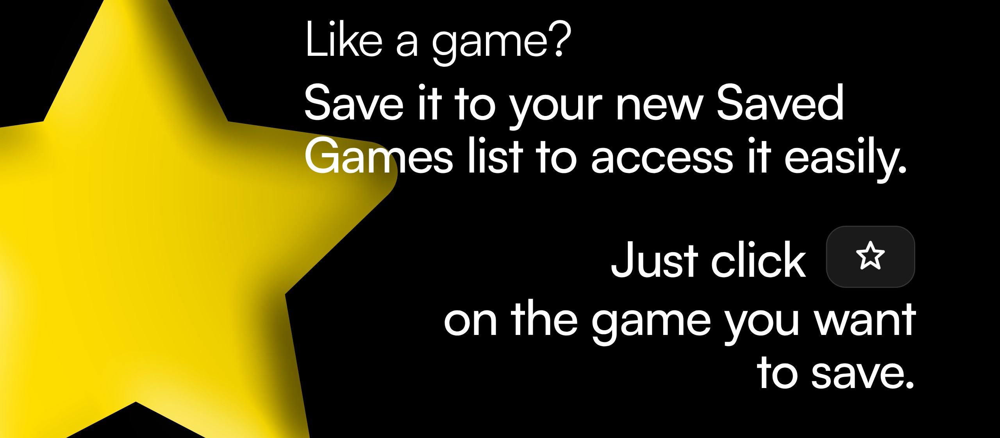

This update brings vital upgrades and features to make your playing experience even better. This includes a new section on the homepage which shows your recently played games, allowing you get get straight back into the action without the need to search for anything, plus a brand new area to store your favourite games.
We've made it even easier to find the games you love. With Saved Games, you can add any games you like to a personalised list that can be accessed from any page via our new sidebar button. All you need to do is click the star icon in the game controls of the game you want to add, and it would be added to your Saved list! If you are looking for the New button on the sidebar, our New games have moved to the Recently Added slider on the homepage.
You can now view the games you have been playing in one, easy to navigate place. Your game progress will be saved automatically for all supported games and shown here so you can jump straight back in without having to find the game again. These games and progress are only available on the device you are playing on as it is stored in your Local Storage.
We would love to hear your feedback - it helps us to improve our site for all of our users and fix anything that isn't right. You can email us or use the Feedback form, both are linked on the Contact Us page, linked below this text.